UNIDAD 1 - INTRODUCCIÓN - OBJETIVO
Unidad 1. Introducción a la administración
La administración forma parte de nuestra vida cotidiana y del funcionamiento de todo tipo de organizaciones. Cada vez que se establecen objetivos, se organizan actividades, se utilizan recursos o se coordinan personas, están presentes elementos administrativos.
En esta unidad conoceremos las bases de la administración, comenzando por su concepto e importancia y revisando cómo ha evolucionado a través del tiempo.
También estudiaremos el uso del método científico para analizar problemas, las habilidades que necesita desarrollar un administrador, la importancia de la ética profesional y el papel del sindicalismo dentro del ámbito laboral.
Esta primera unidad proporcionará las bases necesarias para comprender posteriormente las diferentes escuelas y teorías administrativas.
Objetivo de la unidad
Comprender los fundamentos de la administración, su importancia y evolución histórica, identificando las habilidades y principios que orientan el desempeño del administrador, así como elementos relacionados con la ética y el sindicalismo.
Al finalizar la unidad, el estudiante contará con los conocimientos iniciales necesarios para comprender cómo surge la administración y por qué es necesaria dentro de las organizaciones.
En esta unidad construiremos las bases para comprender qué es la administración, cómo evolucionó y cuál es el papel del administrador dentro de las organizaciones.
Temario Unidad I
Temario de la Unidad 1
Introducción a la administración
1.1 Concepto de administración y su análisis
1.2 Importancia y características de la administración
1.3 Perspectivas históricas de la administración
1.4 El método científico
1.5 Habilidades esenciales para el desempeño del administrador
1.6 Código de ética del administrador
1.7 El sindicalismo
1.1 Concepto de administración y su análisis
1.1 Concepto de administración y su análisis
La administración es el proceso de coordinar personas, recursos y actividades para alcanzar los objetivos de una organización.
Administrar implica decidir qué se quiere lograr, cómo se realizará, quién participará y cómo se utilizarán los recursos disponibles.
La administración está presente en diferentes tipos de organizaciones: empresas, escuelas, hospitales, instituciones públicas, comercios y pequeños negocios.
¿Qué elementos encontramos en la administración?
Para comprender mejor el concepto podemos identificar cuatro elementos básicos:
Objetivos
Representan los resultados que la organización desea alcanzar.
Personas
Son quienes realizan, coordinan y toman decisiones sobre las actividades.
Recursos
Incluyen dinero, materiales, tecnología, instalaciones, información y tiempo.
Actividades
Son las acciones que deben realizarse para alcanzar los objetivos establecidos.
Estos elementos necesitan estar coordinados. Tener recursos y personal no garantiza buenos resultados si cada persona trabaja sin una dirección común.
Un ejemplo:
Una cafetería desea atender diariamente a 100 clientes.
Para lograrlo necesita personal, ingredientes, equipo, dinero y tiempo. También debe organizar las compras, distribuir responsabilidades, atender a los clientes y supervisar los resultados.
La administración permite coordinar todos esos elementos para alcanzar el objetivo.
Administrar no consiste solamente en dar órdenes; significa coordinar personas, recursos y actividades para alcanzar objetivos.
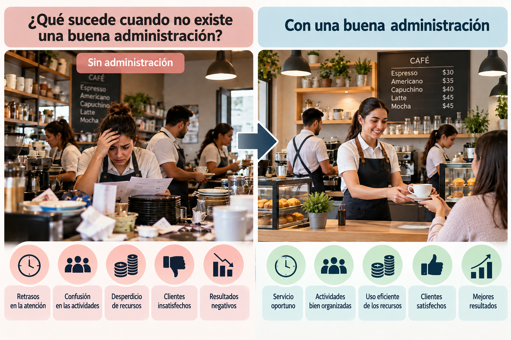
1.2 Importancia y características de la administración
1.2 Importancia y características de la administración
La administración es importante porque permite que una organización ordene sus esfuerzos y utilice adecuadamente sus recursos para alcanzar sus objetivos.
Sin una adecuada administración pueden presentarse problemas como duplicidad de actividades, desperdicio de recursos, falta de coordinación y dificultad para alcanzar los resultados esperados.
¿Por qué es importante?
Una buena administración permite:
Aprovechar los recursos.
Busca utilizar de manera adecuada el personal, dinero, materiales, tecnología y tiempo.
Coordinar el trabajo.
Permite que las personas conozcan sus responsabilidades y trabajen hacia objetivos comunes.
Tomar mejores decisiones.
Proporciona información y organización para analizar situaciones antes de actuar.
Alcanzar objetivos.
Orienta las actividades hacia los resultados que busca la organización.
Adaptarse a los cambios.
Ayuda a responder ante nuevas necesidades, tecnologías, competencia o condiciones del entorno.
Características de la administración
La administración posee características que permiten aplicarla en diferentes organizaciones:
Universal: está presente en empresas, instituciones públicas, escuelas, hospitales, comercios y otras organizaciones.
Flexible: puede adaptarse a las características y necesidades de cada organización.
Interdisciplinaria: se relaciona con otras áreas del conocimiento, como economía, contabilidad, derecho, psicología y estadística.
Continua: administrar es una actividad permanente; las organizaciones necesitan planear, organizar, dirigir y controlar constantemente.
La administración permite coordinar esfuerzos y aprovechar los recursos para que una organización funcione de manera ordenada y alcance sus objetivos.
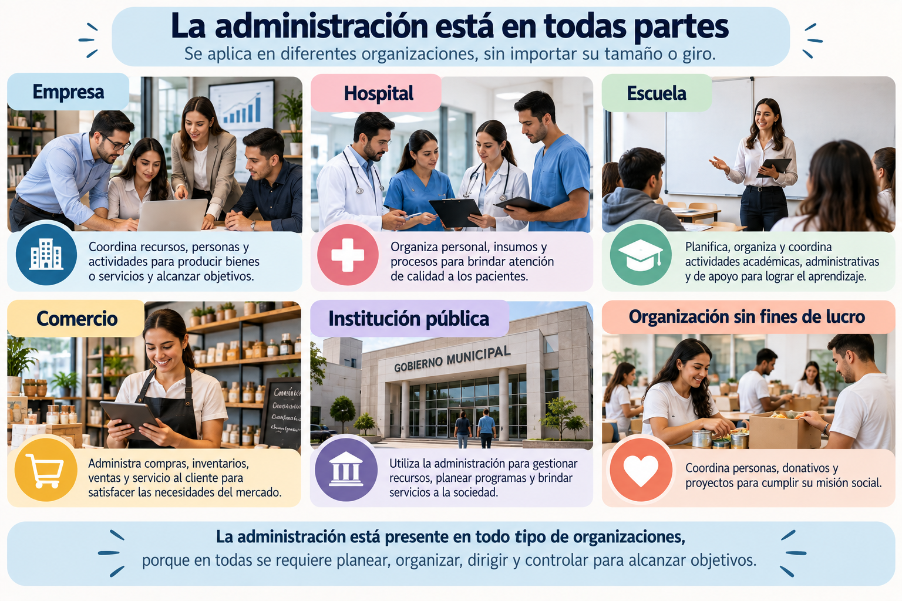
1.3 Perspectivas históricas de la administración
1.3 Perspectivas históricas de la administración
La administración no apareció de un momento a otro. Se fue desarrollando conforme las sociedades crecieron y las actividades humanas se hicieron más complejas.
Desde tiempos antiguos, las personas tuvieron que organizar el trabajo, distribuir responsabilidades y administrar recursos para alcanzar objetivos colectivos.
De la organización básica a las empresas
En las primeras civilizaciones ya existían formas de organización para realizar actividades como la agricultura, la construcción, el comercio y la administración de territorios.
Durante muchos años, gran parte de la producción se realizó en pequeños talleres artesanales, donde una persona o un grupo reducido elaboraba los productos utilizando herramientas sencillas.
La Revolución Industrial produjo un cambio importante. El crecimiento de las fábricas, el uso de maquinaria y la concentración de numerosos trabajadores hicieron necesario encontrar nuevas formas de organizar y supervisar el trabajo.
El crecimiento de las organizaciones
Con el desarrollo industrial surgieron nuevos retos:
Más trabajadores → mayor necesidad de coordinación
Más producción → mayor necesidad de organización
Más recursos → mayor necesidad de control
Mayor competencia → necesidad de mejorar los resultados
La administración comenzó entonces a estudiarse de una manera más formal para encontrar métodos que permitieran organizar mejor las empresas.
De la experiencia al conocimiento administrativo
Con el tiempo, diferentes autores comenzaron a estudiar problemas relacionados con el trabajo, la productividad, la estructura de las empresas y las personas dentro de las organizaciones.
Sus aportaciones dieron origen posteriormente a diferentes escuelas y teorías administrativas, que estudiaremos en las siguientes unidades.
La administración ha evolucionado junto con las organizaciones para responder a nuevas formas de trabajo, producción y coordinación.
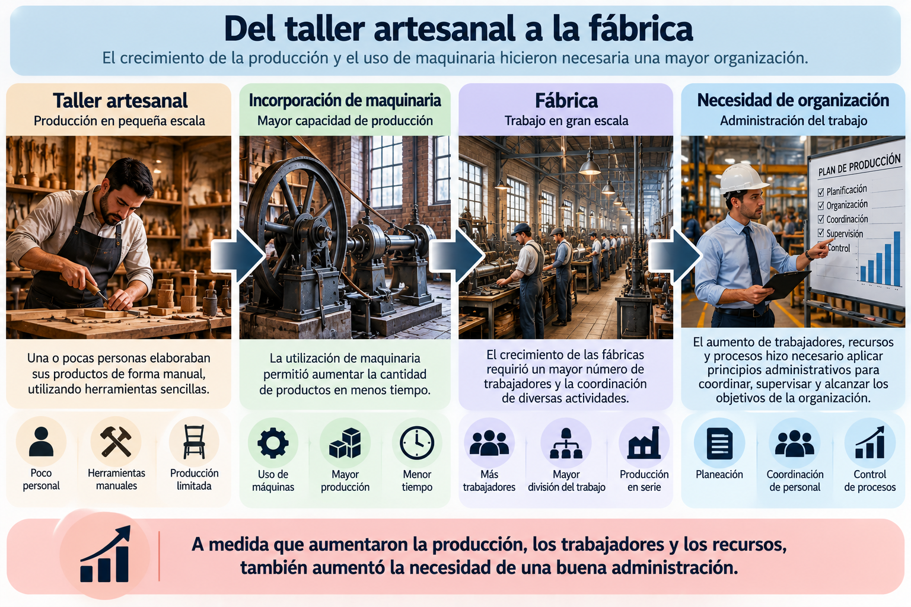
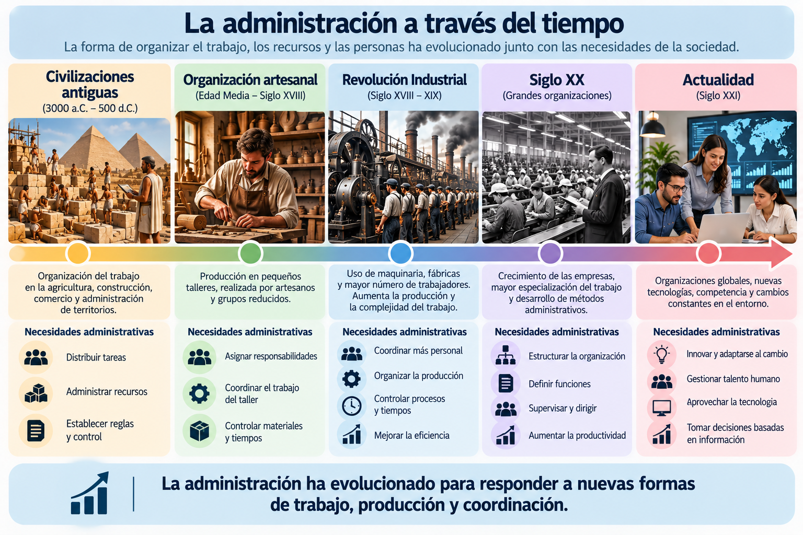
1.4 El método científico
1.4 El método científico
El método científico es una forma ordenada de estudiar una situación para comprenderla y encontrar soluciones basadas en observación, información y análisis, en lugar de actuar únicamente por intuición.
En administración resulta útil porque permite estudiar los problemas de una organización antes de tomar decisiones.
¿Cómo se aplica?
De manera sencilla, podemos comprenderlo mediante las siguientes etapas:
1. Observar
Identificar qué está sucediendo y reconocer una situación que requiere atención.
2. Plantear el problema
Definir con claridad qué queremos investigar o resolver.
3. Recopilar información
Obtener datos que permitan conocer mejor la situación.
4. Analizar
Examinar la información e identificar posibles causas.
5. Proponer una solución
Seleccionar una alternativa y ponerla a prueba.
6. Evaluar los resultados
Comprobar si la solución funcionó y realizar ajustes cuando sea necesario.
Ejemplo:
Una empresa detecta que algunos trabajadores llegan tarde con frecuencia.
En lugar de concluir inmediatamente que existe falta de responsabilidad, el administrador puede investigar primero la situación.
Revisa los registros de asistencia, identifica los horarios con mayor número de retardos y conversa con el personal. Al analizar la información descubre que el principal problema coincide con un cambio reciente en el horario de entrada.
Con esa información puede proponer una solución y posteriormente evaluar si los retardos disminuyen.
La diferencia está en que la decisión se tomó después de analizar evidencias, no solamente a partir de una suposición.
Método científico y administración
Su aplicación ayuda al administrador a:
Observar antes de concluir → obtener información → analizar las causas → tomar decisiones fundamentadas → comprobar resultados.
Esto no significa que todas las decisiones administrativas sean experimentos científicos. Significa utilizar una forma de pensamiento ordenada, objetiva y basada en información para comprender mejor los problemas.
El método científico ayuda al administrador a sustituir las suposiciones por observación, análisis y evidencia antes de tomar una decisión.
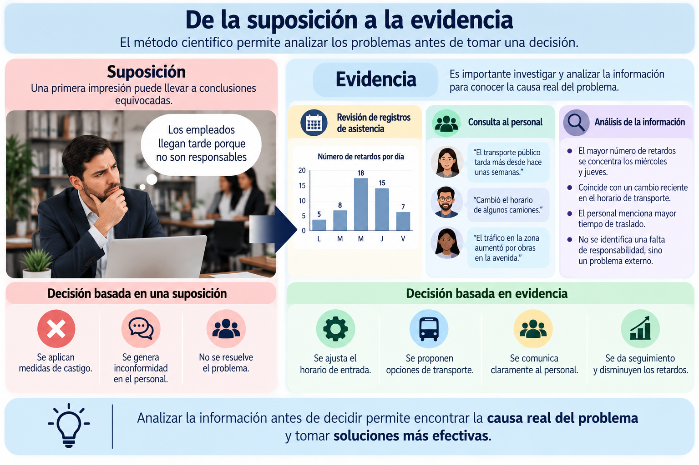
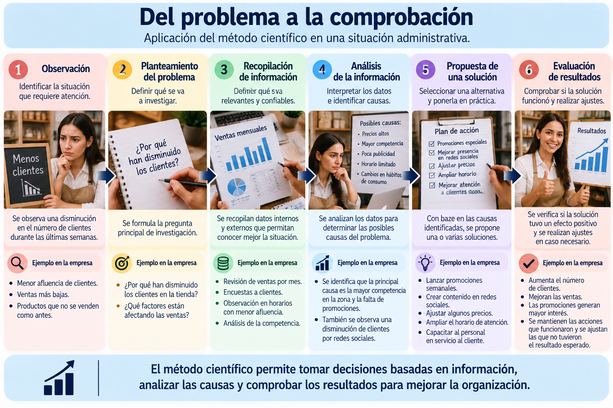
1.5 Habilidades esenciales para el desempeño del administrador
1.5 Habilidades esenciales para el desempeño del administrador
Un administrador no solamente necesita conocimientos sobre empresas y procesos. También requiere habilidades que le permitan trabajar con personas, resolver problemas y tomar decisiones dentro de una organización.
Estas habilidades se desarrollan con la formación, la experiencia y la práctica.
Habilidades técnicas
Son los conocimientos y capacidades necesarios para realizar o comprender actividades específicas relacionadas con el trabajo.
Por ejemplo: utilizar herramientas administrativas, interpretar reportes, elaborar presupuestos, manejar sistemas de información o conocer los procedimientos de un área.
Habilidades humanas
Permiten trabajar adecuadamente con otras personas.
Incluyen comunicación, trabajo en equipo, liderazgo, negociación, capacidad para escuchar y manejo de conflictos.
Son importantes porque gran parte del trabajo administrativo implica coordinar personas con diferentes responsabilidades y formas de pensar.
Habilidades conceptuales
Permiten comprender a la organización como un conjunto y no solamente observar cada área por separado.
Ayudan al administrador a analizar problemas, relacionar información, anticipar consecuencias y comprender cómo una decisión tomada en un departamento puede afectar a otros.
¿Todas son igualmente necesarias?
Las tres son importantes, pero su utilización puede cambiar según el nivel de responsabilidad.
En puestos operativos o de supervisión suelen utilizarse con mayor frecuencia las habilidades técnicas.
Conforme aumenta la responsabilidad administrativa, adquieren mayor importancia las habilidades conceptuales porque se toman decisiones que pueden afectar a toda la organización.
Las habilidades humanas son necesarias en todos los niveles, ya que siempre existe interacción con otras personas.
Ejemplo
Un supervisor puede necesitar conocimientos técnicos para comprender cómo se realiza el trabajo, habilidades humanas para coordinar a su equipo y habilidades conceptuales para entender cómo los resultados de su área contribuyen a los objetivos generales de la empresa.
Un buen administrador combina conocimientos técnicos, capacidad para trabajar con personas y una visión amplia de la organización.
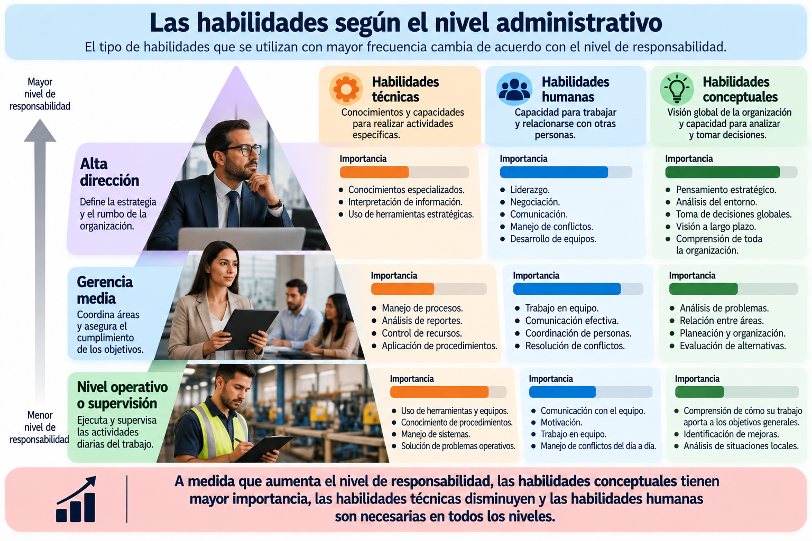
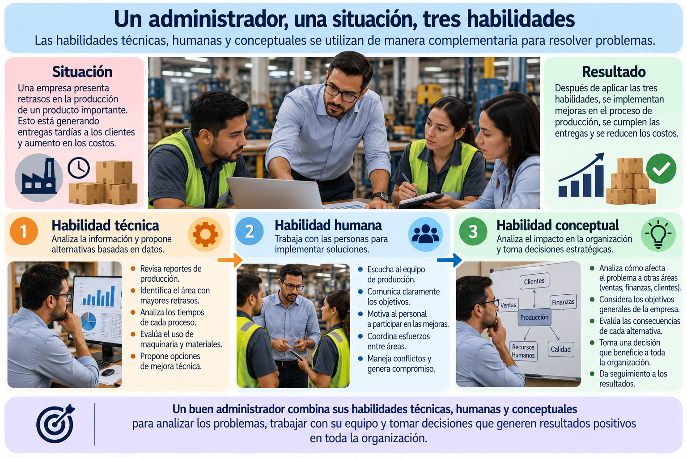
1.6 Código de ética del administrador
1.6 Código de ética del administrador
El administrador toma decisiones que pueden afectar a trabajadores, clientes, proveedores, propietarios y a la sociedad. Por ello, su actuación profesional no debe basarse únicamente en obtener resultados, sino también en considerar cómo se obtienen esos resultados.
La ética profesional orienta la conducta del administrador para actuar de manera responsable y congruente con principios y valores.
¿Para qué sirve un código de ética?
Un código de ética establece principios que sirven como referencia para orientar el comportamiento profesional y enfrentar situaciones en las que una decisión puede tener consecuencias para otras personas o para la organización.
No sustituye el criterio del administrador, pero proporciona una guía para analizar qué es correcto hacer y cuáles pueden ser las consecuencias de una decisión.
Principios importantes
Responsabilidad
Asumir las consecuencias de las decisiones y cumplir los compromisos adquiridos.
Honestidad
Actuar con verdad y evitar engaños o manipulación de información.
Respeto
Reconocer la dignidad, los derechos y las diferencias de las personas.
Justicia y equidad
Evitar favoritismos y procurar decisiones fundamentadas en criterios objetivos.
Confidencialidad
Proteger la información de la organización, trabajadores y clientes cuando corresponda.
Legalidad
Actuar respetando las leyes, normas y disposiciones aplicables.
Un dilema ético
Imaginemos que un administrador descubre un error en un reporte financiero que hace que los resultados de la empresa parezcan mejores de lo que realmente son.
Podría ignorarlo para evitar problemas inmediatos, pero esa decisión puede afectar posteriormente a otras personas y a la propia organización.
Ante una situación de este tipo conviene preguntarse:
¿Es legal? → ¿Es honesto? → ¿A quién puede afectar? → ¿Qué consecuencias puede generar? → ¿Podría justificar públicamente mi decisión?
La ética adquiere especial importancia precisamente cuando el administrador debe elegir entre alternativas que implican intereses, responsabilidades y consecuencias diferentes.
La ética administrativa no consiste únicamente en cumplir reglas; implica tomar decisiones responsables considerando sus consecuencias para la organización y para las personas.
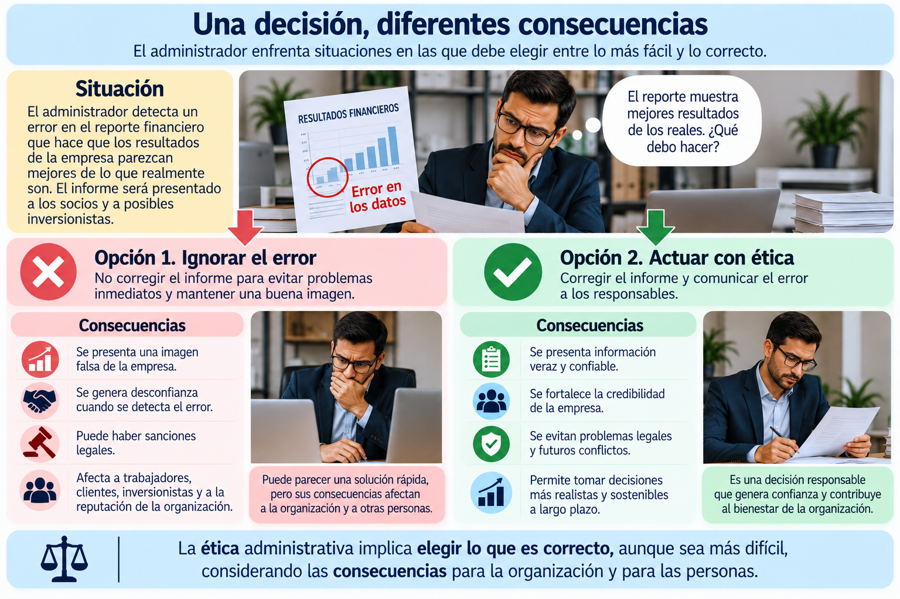
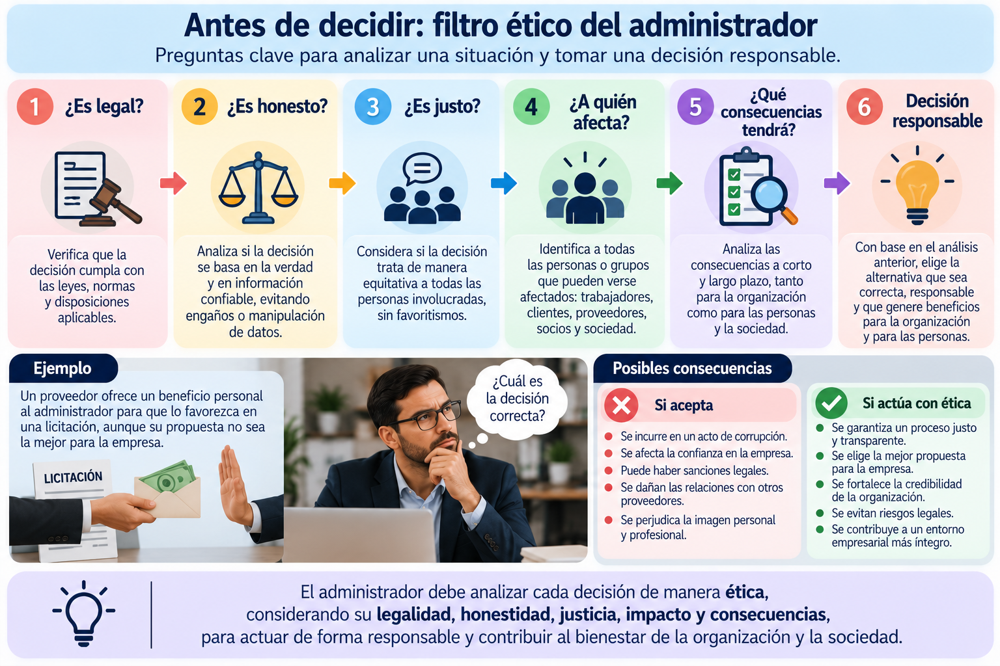
1.7 El sindicalismo
1.7 El sindicalismo
El sindicalismo es el movimiento mediante el cual los trabajadores se organizan para representar y defender colectivamente sus intereses laborales.
Los sindicatos surgieron principalmente ante la necesidad de los trabajadores de organizarse frente a las condiciones laborales generadas por el crecimiento industrial.
¿Qué es un sindicato?
Un sindicato es una organización constituida por trabajadores para la representación, estudio y defensa de sus intereses comunes relacionados con el trabajo.
A través de la organización colectiva, los trabajadores pueden participar en asuntos relacionados con sus condiciones laborales y establecer mecanismos de diálogo y negociación.
¿Qué aspectos puede representar?
La representación sindical puede involucrar asuntos como:
Condiciones de trabajo
Jornadas, descansos y condiciones en las que se realizan las actividades.
Salarios y prestaciones
Aspectos relacionados con la remuneración y los beneficios laborales.
Seguridad y salud en el trabajo
Medidas destinadas a proteger a los trabajadores durante sus actividades.
Representación colectiva
Participación de los trabajadores mediante representantes ante determinadas situaciones laborales.
Sindicalismo y administración
Para la administración es importante comprender el sindicalismo porque las relaciones laborales forman parte del funcionamiento de una organización.
Cuando existe representación sindical, la administración necesita establecer mecanismos adecuados de comunicación, negociación y cumplimiento de los acuerdos laborales.
La relación puede entenderse de esta manera:
Trabajadores ↔ Sindicato ↔ Organización
El objetivo de una adecuada relación laboral es favorecer el diálogo y atender los asuntos laborales mediante mecanismos establecidos, evitando que los desacuerdos afecten innecesariamente el funcionamiento de la organización.
El sindicalismo permite que los trabajadores organicen y representen colectivamente sus intereses laborales, por lo que constituye un elemento importante dentro de las relaciones entre trabajadores y organizaciones.
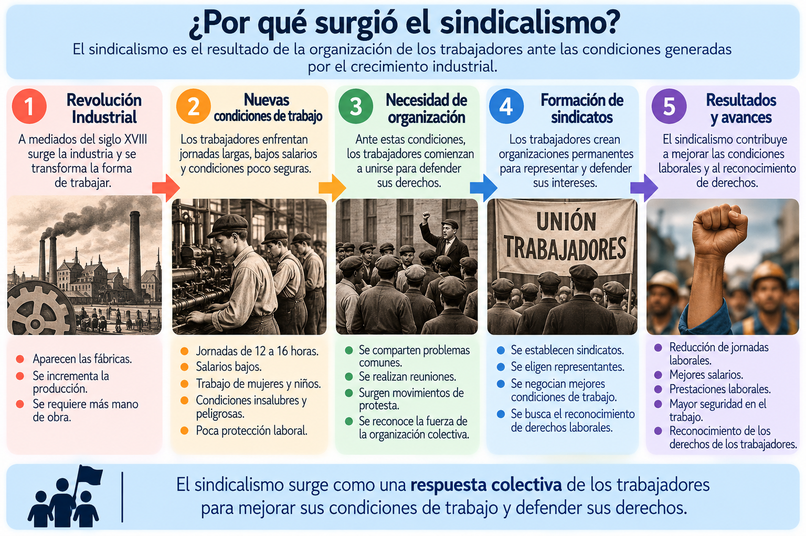
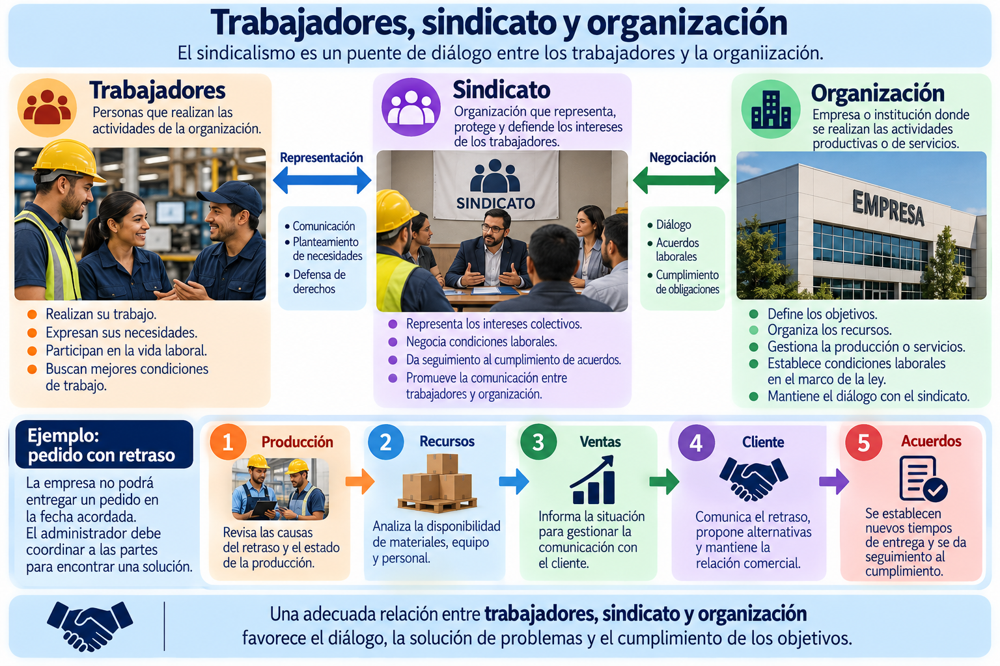